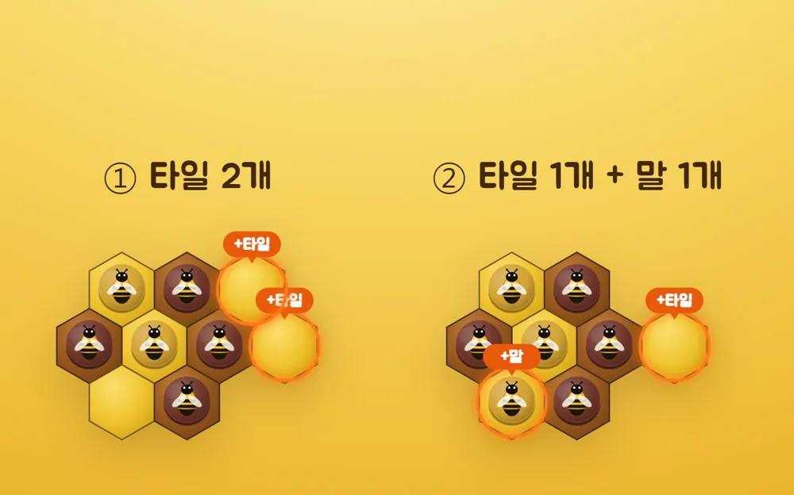
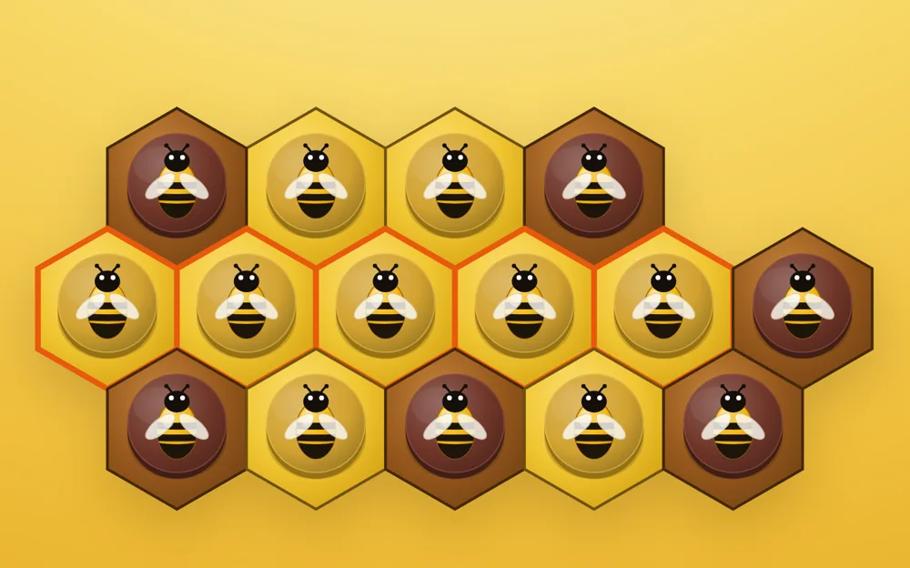
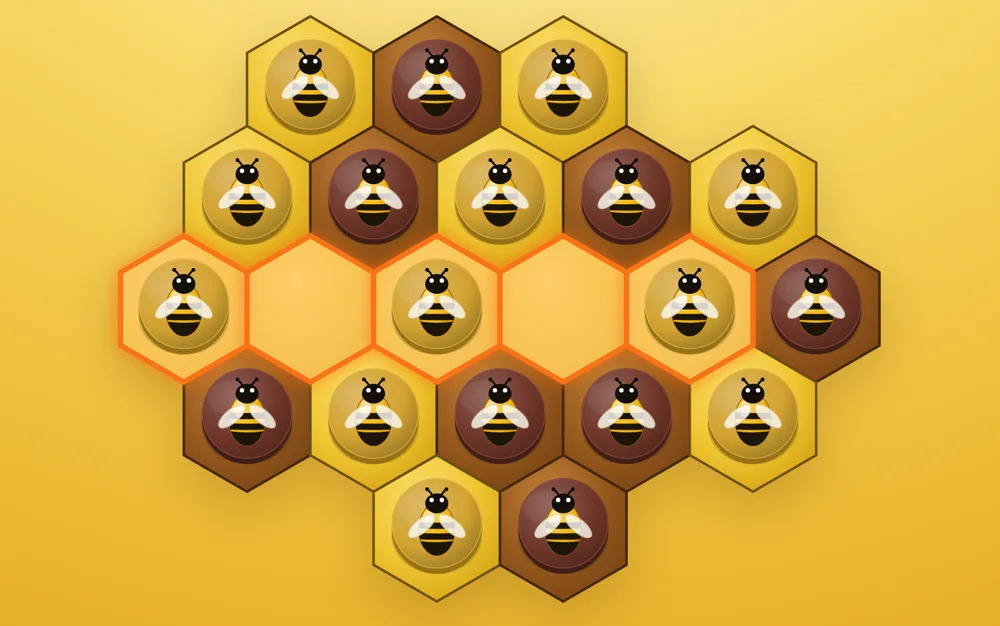

Be the Bee
같은 색 꿀벌 5개를 일렬로 연결해 벌집의 주인이 되세요.
무료 · 브라우저 · 설치 없음
HOW TO PLAY
타일을 깔아 판을 넓히고, 말 5개를 한 줄로.

RULE 1
보드가 자란다
고정 보드가 없습니다. 타일 2장에서 시작해, 서로 타일을 이어 붙이며 판이 커집니다.

RULE 2
승리는 오직 말 5목
"말 5개를 한 줄로 이으면 승리예요." 타일 쌓기에 끌려다니면 집니다. 말은 타일 위에만 놓을 수 있습니다.

RULE 3
벌집은 잠긴다
타일 5장이 한 줄이 되면 벌집이 됩니다. 완성된 벌집 타일 위에는 주인만 새 말을 놓을 수 있습니다.
YOUR TURN
한 턴에 둘 중 하나.
① 타일 2개
내 타일 2개를 놓아 판을 빠르게 넓힙니다. 말은 놓지 않습니다.
② 타일 + 말
타일 1개를 깔고, 아무 타일 위에나 내 말 1개를 올립니다. 5목으로 가는 길입니다.
MODES
상대가 없어도, 상대가 세도.
최상급 AI는 수읽기 탐색으로 둡니다. 여왕벌 모드는 잠긴 벌집을 한 번 무시할 수 있는 변형 룰입니다.
PRACTICE
연습 대국: 갈색 AI와 한 판.
본편의 ② 턴만 씁니다: 타일 1개를 깔고, 아무 타일 위에 말 1개. 노랑(당신) 선입니다.
DEVLOG
만든 기록: 종이 보드게임이 웹 게임이 되기까지.
-
2025.06 · 종이판
판이 없는 오목
대학 수업 '게임의 이해' 기말 과제로 세 사람이 만든 종이 보드게임입니다. 주제는 오목을 변형한 2인 게임이었고, 출발점은 제가 낸 "타일과 말, 두 층에서 모두 오목을 두자"는 안이었습니다.
처음 컨셉은 넓어지는 인간관계였습니다. 판이 바깥으로 자라는 모양을 살리려 타일을 육각형으로 정했고, 그 육각형이 벌집이 되면서 꿀벌 게임이 됐습니다.
플레이테스트에서 들은 말: "차원이 두 개에서 진행되는 오목"
-
2026.06.21 · 웹으로 옮긴 첫날
설명서의 전략 팁을 AI에게
종이판 설명서 끝에는 초보자용 전략 팁 세 개가 있습니다. 플레이테스트에서 "팁이 있으면 좋겠다"는 말을 여러 번 듣고 넣은 것입니다. 웹으로 옮기면서 이 세 문장을 그대로 AI의 판단 기준으로 바꿨습니다.
그런데 처음 AI는 늘 새 타일 위에만 말을 놓았습니다. 상대 타일을 먼저 차지하는 수를 후보로조차 만들지 않았기 때문입니다. 후보를 넓히자 비로소 이 게임다운 수를 두기 시작했습니다.
"벌집에는 주인이 있지만, 타일에는 주인이 없다!" (설명서 전략 팁)
-
2026.06.21 ~ 06.22
여왕벌은 골라야 나온다
여왕벌은 종이판의 확장 규칙입니다. 한 판에 한 번, 상대가 잠근 벌집 위에도 말을 놓을 수 있습니다. 판을 뒤집을 만큼 강해서 기본 판에서는 빼고, 익숙해진 사람이 켜는 모드로 옮겼습니다. AI는 여왕벌을 쓰지 않습니다. 모드를 켜면 무엇이 달라지는지 그림으로 먼저 보여 줍니다.
-
2026.06.23
바둑돌에서 꿀벌로
종이판 말의 실물 사진에 맞춰 말 모양을 여러 번 바꿨습니다. 입체 원판, 다시 평면, 귀여운 벌 그림, 3D 벌. 입체 원판과 3D는 그럴듯해 보였지만 판 위에서 진영이 덜 또렷했습니다. 남은 것은 몸 색으로 진영을 가르는 평면 벌 그림입니다.
-
2026.06.27 ~ 06.30
AI가 끝내 못 배운 수
제가 전문가 AI를 이긴 기보 세 판이 모두 같은 모양이었습니다. 타일 다섯 장으로 벌집을 먼저 잠그고, 잠긴 칸에 말을 채워 막을 수 없는 5목을 만드는 수입니다.
설명서 팁대로 "잠기기 전에 허리를 끊는" 판단을 AI에 넣었지만, 실제 기보로 재 보니 효과가 없어 그날 오후 되돌렸습니다. 대가가 열 수 넘게 뒤에 오는 수라 AI가 내다보는 깊이 밖이었습니다. 반대로 내 벌집을 잠가 이기는 공격 쪽은 가르칠 수 있었습니다.
방어는 결국 사람에게 돌려줬습니다. 코칭을 '강하게'로 켜면 곧 잠길 줄과 끊을 칸을 판 위에 표시해 줍니다.
-
2026.07.14 ~ 09.15
아무도 두지 않는 날에도
온라인 대전은 무료 데이터베이스 서비스 위에서 돌아갑니다. 일주일 동안 요청이 없으면 서비스가 프로젝트를 재우는데, 그러면 다른 기능은 멀쩡하고 온라인 대전만 조용히 멈춥니다.
사흘마다 낡은 방을 정리하는 자동 작업을 붙였지만 첫 실행 전에 잠들어 직접 깨웠고, 활동이 모자란다는 경고에 하루 4회로 늘렸습니다. 9월에는 저장소에 60일 동안 커밋이 없으면 그 자동 작업마저 꺼진다는 알림이 와서, 실행할 때마다 스스로를 다시 켜도록 고쳤습니다.
웹 버전 기록 2026.06.21 ~ 09.15 · 커밋 332개
원작 보드게임 김수민 · 김재현 · 조주현
웹 구현 김수민
벌집의 주인이 되세요.